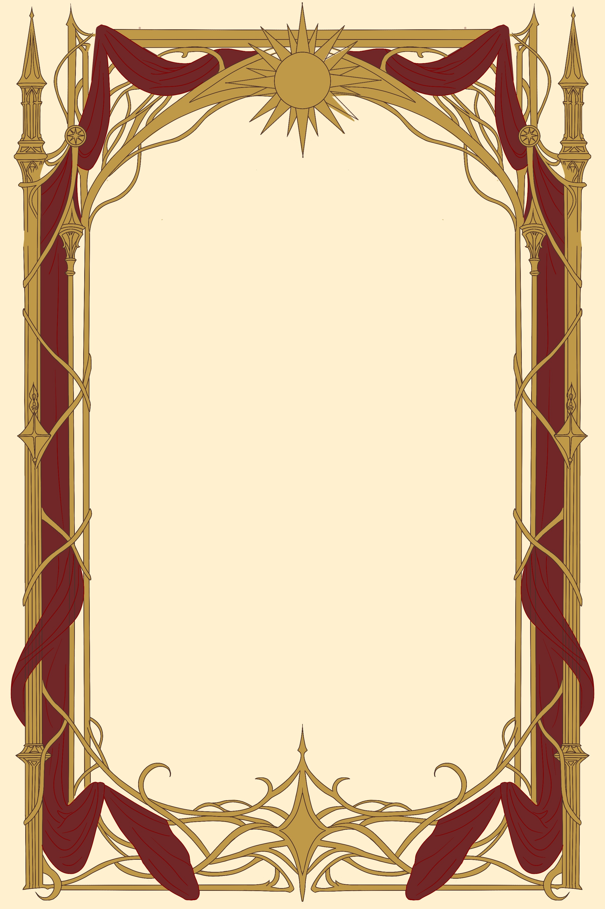

Myrrin Sylvamer
Transcript: Pronunciation of Myrrin Sylvamer.
Every story is shaped by the lives of those who inhabit it. From royalty to ordinary villagers, the people of Avelis are bound by love, loyalty, ambition, and the choices they make. Explore the characters behind each story, discover their connections, and uncover the roles they play in an ever-changing world.

Transcript: Pronunciation of Myrrin Sylvamer.
Transcript: Pronunciation of Solarius Aldeatus.